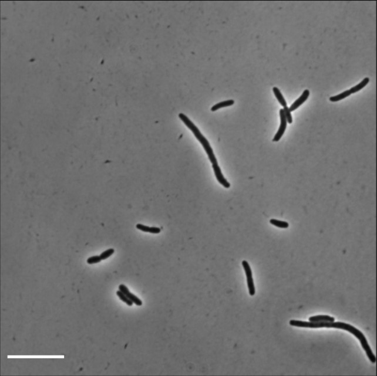
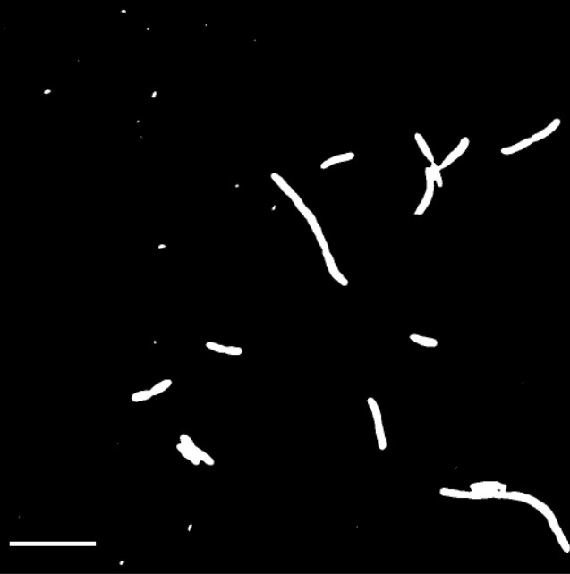
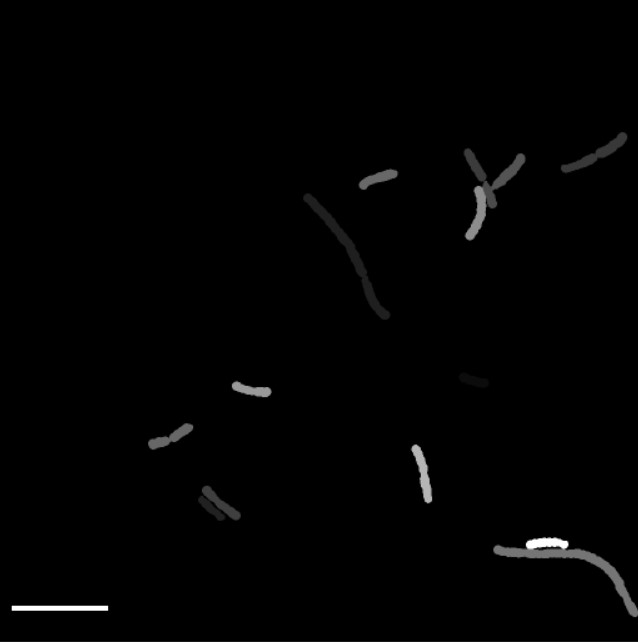

Konthalapalli Hradini
Sanaa Qahera Khan
Manually analysing data can be an arduous process that eats into the time available to carry out experiments. For this reason, we hope to use machine learning to automate the analysis of mutant Escherichia coli (E. coli) cells. Our dataset consists of phase contrast images of FtsZ mutant E. coli . FtsZ is an important bacterial cytoskeletal protein that is involved in cell division and in driving cell wall metabolism[1]. The FtsZ mutants are extremely elongated and show various shape abnormalities, as well as differences in curvature. By classifying images based on shape, important conclusions can be drawn about cell wall composition and the nature of cytoskeletal mutation. This information can help direct future experiments.
The aim of our project is to classify cells from phase contrast images based on shape features. For this purpose, machine learning can be useful in two places:
The dataset consists of phase contrast microscopy images from Dr Ramanujam Srinivasan's Lab at SBS , NISER. There are 28 images with ~ 12 cells per image. Here is a slide set where we highlight the variation in the cells and try different segmentation methods to get cell boundaries.
As mentioned previously, our project can be divided into two steps; cell segmentation and object classification.
For the segmentation step, there are two approaches we could adopt.
One would be to use traditional image analysis to segment cells. However, this can prove to be difficult since our data contains many closely clumped cells.
If purely analytical methods fail to separate cells, then we propose to use convolutional neural networks (CNN). CNN has previously been used in the segmentation of cryo-stage microscope images [2]. Another study used deep learning to perform cell segmentation on a diverse set of images [3]. The cells in the image were from multiple cell lines so their appearances were quite different from each other. The algorithm still succeeded in segmenting cells, even ones that were touching. Though these segmentation problems are not quite the same as our issue with clumped cells, we are certain that CNN could be a good algorithm to address the issue.
Once segmentation is successful, the next stage in our project is the classification of cells. Through our survey of the literature, we have again found two ways this could be done.
The first way would be to use CNN to do object classification. In one of the papers we read, CNN has been used to identify cells undergoing mitosis. A low rank matrix recovery model (LRMR) is used to identify regions containing mitosis events. Then, a hierarchical CNN is applied on these regions to classify them into one of four stages of mitosis. The dataset in this study is a timelapse of phase contrast images[4]. CNN has also been used in regenerative medicine. In the latter case, CNN was used to identify cellular differentiation in cultured C2C12 cells[5]. The algorithm was provided with phase contrast images of cells before and after differentiation as input.
The second approach comes from a paper where fibroblast cells were classified based on morphology[6]. Here, the Adaboost algorithm was used. The algorithm was provided with shape based and appearance based feature of the cells, along with a set of weak classifiers. The output was a set of strong classifiers and associated weights that the algorithm uses to classify cells in the prediction phase.
We are more inclined to use CNN at this stage, since it has proved to be capable of solving a diverse range of image analysis and object classification problems [7], [8].
We spent our first week talking to Dr. Srini and PhD students from his lab to find out the biologically relevant shape classes. From that conversation we were able to list criteria that we might use for classification.
We also found out more about the methods they currently use to segment cells which is a combination of imperfect analytical methods and manual segmentation. This supports our decision to treat the segmentation of cells to be a unique and non-trivial problem in its own right.
The second task we focused on was understanding more about CNN. We went over introductory material and looked at tutorials that introduced us to important libraries. As a result of that, we have decided to use Tensorflow with keras as Api. Using Tensorflow we constructed some simple CNNs that use MNIST data. This gave us an idea about the kind of formatting and preprocessing we must perform on our own dataset.
We have around 900 images for our segmentation problem. However, they were given to us in various formats and sizes. We have converted them into a single format for further processing. We have automated part of the process of identifying cell boundaries. We have written a macro that performs thresholding, converts the thresholded image into a binary mask and then identifies the cell boundaries. After this step, we will manually edit the boundaries of clumped cells. Then we will generate masks which will serve as the labels for our algorithm.
| Input image | Thresholded image | Labels |
|---|---|---|
|  |  |  |
We have also explored the possibility of using synthetic data generation and data augmentation to expand our dataset. For classification, especially, our dataset is quite small. Using synthetic data generation can hopefully solve this problem. In one of the papers we read, parametric models were used to synthetically generate bacterial shapes [9]. Our dataset for segmentation is much larger than the one we have for classification but we still hope to increase the training data by modifying (rotation, flipping etc) existing images.
As mentioned before, we will be using the U-Net architecture to solve our segmentation problem. This architecture won the EM (electron microscopy) segmentation challenge at ISBI 2012 and it has also proved to be very efficient at performing segmentation on phase contrast and DIC microscopy images [10]. It builds on top of a fully convolutional network but there are no fully connected layers. Only the valid part of each convolution is used.
There are several reasons we chose this architecture: